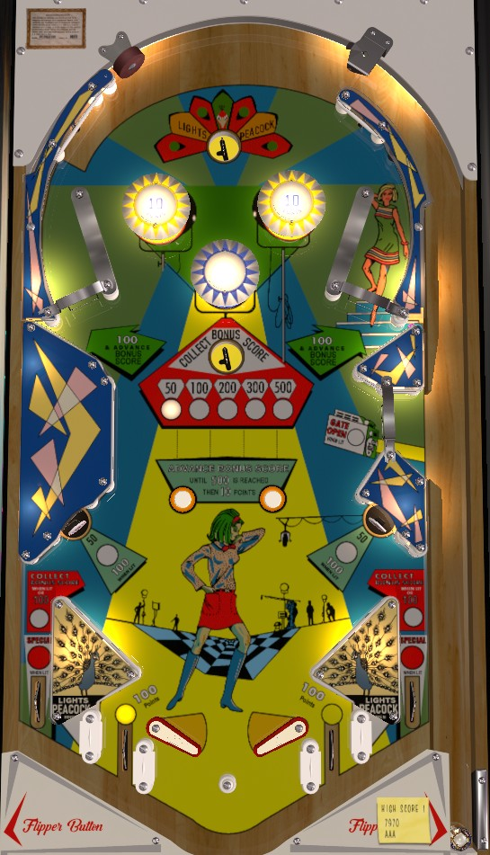

The Peacock value is scored by landing in the top saucer at any time or rolling through one of the near out lanes when lit. Only one near out lane is lit at a time, and they alternate based on 10-point switch hits. When the Peacock value is scored, a lit will quickly rotate between the feathers of the peacock on the backglass, which are labelled 50, 100, 200, 300, and 500 points. Pressing the Peacock Button on the front of the cabinet stops the rotating light and scores what is lit. In the game mechanics, this scoring is triggered by a captive ball being fired around a small loop underneath the large plastic in the middle-left; this process takes just enough time that you may need to "lead your shot" with the Peacock button, i.e., pressing the button when 200 is lit to score 500.
The Bonus value starts each ball at 50 points. The rollunder gates in the upper side lanes and the two rollover buttons in the center of the playfield advance the bonus in the sequence 50-100-200-300-500. The rollunder gates always score 100 points; the rollover buttons score no points, unless the bonus is maxed at 500 points, in which case the buttons score 10. Advancing the bonus to 500 points also opens the free ball gate in the middle right for the rest of the ball and increases the value of the lower left and lower right standup targets from 50 to 100 points. The bonus value is collected by shooting the lower saucer located just below the blue pop bumper. Collecting the bonus value does not reset it.
Yellow bumpers score 10 points. Blue bumpers and slingshots score 1 point.
There are two out lanes on each side of the table: one directly behind the flipper hinge which makes trapping the ball impossible, and one at the edge of the table. The slingshots are located between the near and far in lanes on each side. Near in lanes always score 100 points; if they are lit, they trigger Peacock scoring. Far out lanes score 100 points, or the Bonus value when lit. One near in lane and one far in lane are lit at any time; if the left far out lane is lit, the right near in lane will be lit, and vice versa. Lit out lanes alternate any time a 10-point switch is scored. The far out lanes are also lit for Special occasionally (again based on 10-point switch hits) if the Bonus is maxed at 500 points.
There is also a center peg between/below the flippers.
Scoring a Special or reaching a replay score and award 1 credit or 1 extra ball, but cannot be set to give points as far as I have found. There is no conventional end of ball bonus; the playfield Bonus value is only scored at the end of the ball if the ball drained down a lit far out lane. Tilt ends the ball in play only.
The below picture of Twinky's playfield was taken from the VPX recreation by JPSalas.
